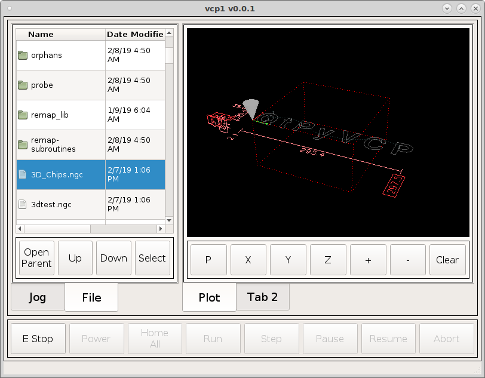

File Navigator¶
In Tab 2 of the left tab widget do the same as before add a grid layout, right click in the tab and select layout as a grid, right click the grid and morph into frame. In the QMainWindow stylesheet add the following:
DialogButton {
min-height: 50px;
min-width: 50px;
font: 14pt "DejaVu Sans";
}
{kind=link}
Now add a FileSystemTable into the QFrame. In hiddenColumns add 1,2 to
hide the second and third column (numbers start at 0). Now change
HorizontalHeaderDefaultSectionSize to 150. This will make the left column a bit
wider. Change VerticalHeaderDefaultSectionSize to 50 so we can select a file
with the touch screen.
{kind=link}
Now add a horizontal layout under the file navigator and make sure its inside
the frame and morph it into a frame and add frameShape Box and Margins to 5.
Drag 4 Push Buttons from the Buttons Widget section (we don’t need action
buttons for this. From left to right name them Open\nParent, Up, Down and
Select. Change the objectNames to navParent, navUp, navDown and
navSelect.
Add the following new signals:
Sender Signal Receiver Slot
navParent clicked() filesystemtable viewParentDirectory()
navUp clicked() filesystemtable selectPrevious()
navDown clicked() filesystemtable selectNext()
navSelect clicked() filesystemtable openSelectedItem()
{kind=link}
Now when we run the VCP we can navigate up and down When you Select a directory it opens the directory. When you Select a file it loads that file into the VCP
{kind=link}